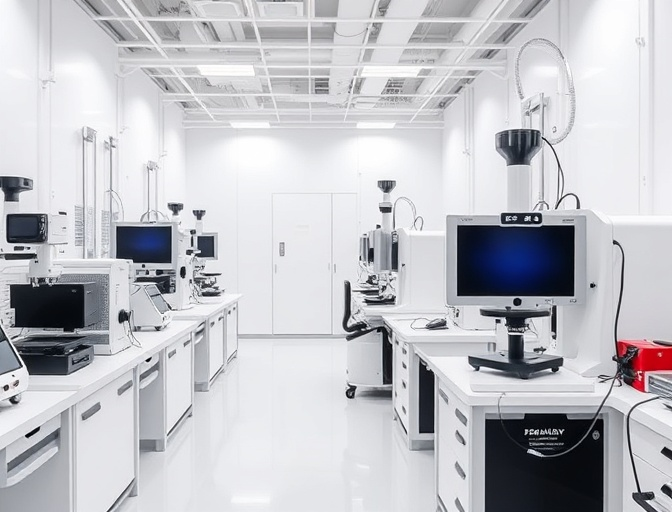

設立趣旨
リカバリー市場の拡大に伴い、科学的根拠に基づく信頼性の高い製品普及を目指しています
設立の背景と理念
近年、リカバリー市場の拡大に伴い、消費者は健康や機能性に対する関心をますます高めています。
私たちは「安心・安全で科学的根拠に基づく機能性表示製品を普及していきたい」という理念のもと、製品の信頼性と市場の健全化に寄与することを目的に本会を設立しました。
従来は繊維製品に主眼を置いていましたが、現在では食品、日用品、装着品、医療・美容アイテムなど、機能性を表示する製品が多様化しています。
本会は、繊維製品に限定せず、広く機能性表示製品全体を対象とし、エビデンスを重視した情報提供・啓発・認証制度の整備を通じて、消費者に信頼される市場づくりを進めてまいります。
普及の意義
機能性表示製品の普及において、最も重要な要素は消費者が安心して使用できることです
消費者の信頼性向上
科学的根拠に基づいた明確な効果情報の提示
科学的エビデンスの重視
研究結果・体験談の収集・公開による透明性確保
企業の責任明確化
誇大広告や誤認表現の是正、公正な市場形成の支援
重要なポイント
製品の信頼性を高めるためには、科学的根拠に基づく正確な情報提供が欠かせません。 消費者の信頼性向上、科学的エビデンスの重視、企業の責任明確化を通じて、 安心して使用できる製品環境を構築してまいります。
活動内容
機能性表示製品の普及と市場の健全化のため、多角的なアプローチで活動を展開しています
エビデンスの収集・公開
機能性表示製品の効果に関する科学的根拠を収集し、透明性を持って公開しています。
科学的根拠に基づいた啓発活動
消費者や企業に対して、正確な情報に基づく教育・啓発プログラムを実施しています。
製品の評価・認証制度
厳格な基準に基づく製品評価と認証制度を整備し、品質保証を行っています。
企業・団体との連携推進
業界全体の発展のため、企業や関連団体との積極的な連携を推進しています。

研究支援および市場の標準化
新たな研究開発を支援し、業界標準の確立と市場の健全化を図っています。
今後の展望
機能性表示製品市場の健全な発展と消費者への信頼性提供を通じて、より良い未来を築いてまいります
市場の健全な発展
機能性表示製品市場の健全な発展と消費者への信頼性提供を図ります
新製品開発の促進
エビデンスを基盤とした新たな製品開発を促進します
標準化の推進
リカバリー市場における標準化を推進していきます
企業間連携の深化
企業間の連携を深め、業界全体の品質向上を図ります
消費者教育の推進
消費者教育を通じてより広範な市場への浸透を目指します
安心安全な製品普及
安心安全な製品を普及させることを目指します
皆様のご支援をお願いいたします
機能性表示製品市場の健全な発展と消費者への信頼性提供を図ることで、安心安全な製品を普及させることを目指します。 さらに、エビデンスを基盤とした新たな製品開発を促進し、リカバリー市場における標準化を推進していきます。 皆様のご支援、ご協力、ご参画を何卒よろしくお願い申し上げます。
参画・協力のお問い合わせお問い合わせ
機能性表示製品普及会へのご質問、ご相談、参画のご希望など、お気軽にお問い合わせください
お問い合わせ情報
所在地
山梨県甲府市青葉町18-20 機能性表示製品普及会事務局
メールアドレス
ftp.fukyuu@gmail.com
受付時間
平日 10:00 - 17:00